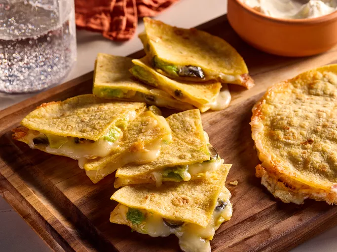

Quesadillas

Description
This speedy quesadilla recipe offers the perfect template for customization. Add whatever ingredients you love and have on hand; for example, shredded leftover chicken. "This was a perfect quesadilla. My first with avocado, but certainly not my last. Delicious with fresh pico de gallo," says home cook gapch1026."
Ingredients
- 10 (6 inch) corn tortillas
- 2 cups shredded mozzarella cheese
- 1 (2 ounce) can sliced black olives
- 2 avocados - peeled, pitted and sliced
- 2 teaspoons hot pepper sauce
Steps
- Gather all ingredients.
- Heat a large frying pan or griddle over a medium heat. Place one tortilla flat on the frying pan. Cook for 1 minute, then flip the tortilla over.
- Sprinkle a little more than 1/4 cup cheese on top of tortilla, followed by some olives, avocado, and hot pepper sauce. Place another tortilla on top to make a sandwich; cover with a lid. Cook for 1 minute, then flip the quesadilla. Cook until cheese has melted on the inside; transfer quesadilla to a plate. Repeat with remaining ingredients.
- Cut the quesadillas into triangles and serve.
Home